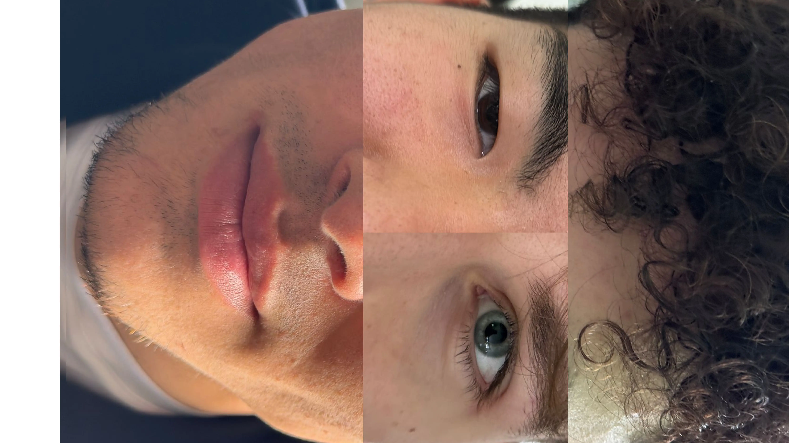

La Falsa Concezione delle Razze Umane
L'analisi scientifica decostruisce il mito biologico della razza, promuovendo l'uguaglianza e fornendo gli strumenti per combattere la discriminazione.
Cos'è una Razza?
Dal punto di vista biologico e zoologico, la razza, spesso definita come sottospecie, rappresenta un raggruppamento di popolazioni appartenenti alla stessa specie che condividono un pool genico comune e caratteri morfologici o fisiologici ereditari distinti, mantenuti tali grazie a un isolamento geografico. Tuttavia, nella nostra specie, Homo sapiens, il concetto biologico di razza non è applicabile. A differenza di altre specie animali, come i cani che contano più di quattrocento razze create artificialmente attraverso accoppiamenti selettivi e rigide barriere riproduttive, gli esseri umani presentano caratteristiche genetiche che sfidano qualsiasi tentativo di categorizzazione rigida. Questa peculiarità della nostra specie è determinata principalmente da tre fattori biologici fondamentali che agiscono in modo combinato.
Il primo fattore risiede nell'elevata mobilità e nel continuo flusso genico che hanno caratterizzato la storia umana. Nel corso dei millenni, le diverse popolazioni si sono costantemente spostate, mescolate e accoppiate tra loro, impedendo quell'isolamento riproduttivo che è la condizione necessaria per la formazione di sottospecie distinte. A questo si aggiunge il fenomeno della variazione clinale, o continua. I tratti somatici umani, come il colore della pelle, la forma degli occhi o l'altezza, non cambiano in modo discontinuo o a salti netti, ma variano in modo graduale nello spazio geografico, rendendo impossibile tracciare un confine biologico oggettivo dove finisce un gruppo e ne inizia un altro. Infine, la paleontologia e la genetica evoluzionistica dimostrano che l'umanità moderna ha un'origine africana estremamente recente, datata tra i duecentomila e i trecentomila anni fa. Derivando da un piccolo gruppo ancestrale originario che si è poi diffuso nel resto del mondo secondo il modello Out of Africa, gli esseri umani moderni condividono un grado di omogeneità genetica straordinariamente elevato, di gran lunga superiore a quello riscontrabile tra gli scimpanzé o altri primati. Come spiega efficacemente il filosofo della scienza Telmo Pievani, le razze umane non esistono sia per ragioni geografiche, sia per ragioni di tempo, poiché la genetica moderna dimostra che sotto la pelle siamo tutti sorprendentemente simili.

L'Invenzione della Razza e la Propaganda
L'idea di suddividere l'umanità in razze non affonda le sue radici nella scienza, bensì nella storia coloniale e nella propaganda politica. Ottant'anni fa, in Italia, i direttori degli istituti superiori ricevettero una circolare del Ministero dell'Educazione Nazionale con la quale venivano invitati a diffondere la rivista La Difesa della Razza e ad assicurarsi che i suoi contenuti venissero assimilati dagli studenti. Questa pubblicazione divenne uno dei principali strumenti di propaganda razzista che il governo fascista utilizzò per giustificare e diffondere le leggi razziali del 1938.
Più in generale, l'invenzione delle razze umane si sviluppò soprattutto in corrispondenza delle grandi espansioni coloniali delle potenze europee, quando gli esploratori entrarono in contatto con popoli dall'aspetto e dalle culture differenti. Il fondamento teorico di questa catalogazione viene tradizionalmente attribuito a François Bernier, medico e viaggiatore francese che nel 1684 propose per la prima volta la divisione dell'umanità in quattro razze basate principalmente sulla geografia e sul colore della pelle, inaugurando una lunga tradizione di classificazione arbitraria della diversità umana.
Studi e Teorie
Il punto di svolta in questo percorso di smentita scientifica arrivò nel 1972, quando il genetista statunitense Richard Lewontin pubblicò un articolo fondamentale intitolato The Apportionment of Human Diversity. Attraverso l'analisi statistica dei polimorfismi proteici allora conosciuti, Lewontin dimostrò matematicamente che circa l'85% della variabilità genetica totale della nostra specie esiste all'interno di una stessa popolazione, come ad esempio tra individui dello stesso villaggio o della stessa nazione. Al contrario, solo l'8% circa separa popolazioni diverse appartenenti allo stesso continente, e appena il 7% residuo distingue i grandi gruppi continentali tra loro, ovvero quelli che la vecchia antropologia definiva razze. Questo significa che due individui presi a caso all'interno di una stessa comunità possono essere geneticamente più diversi tra loro di quanto lo siano due persone estratte da due continenti opposti.
I risultati di Lewontin, inizialmente accolti con scetticismo a causa dei limiti tecnici dell'epoca, trovarono una clamorosa e definitiva conferma negli anni Novanta grazie alle moderne tecniche di sequenziamento del DNA. Un ruolo cruciale in questo consolidamento fu svolto dall'antropologo e genetista italiano Luigi Luca Cavalli-Sforza, insieme a ricercatori come Guido Barbujani. Cavalli-Sforza, attraverso la mappatura dei geni umani su scala globale culminata nella monumentale opera Storia e geografia dei geni umani, dimostrò con precisione millimetrica la validità di quei dati, provando che la transizione dei caratteri genetici tra le popolazioni avviene per gradienti geografici continui e non per barriere nette. Analizzando decine di migliaia di tratti del genoma in popolazioni native di tutti i continenti, la comunità scientifica ha così blindato l'evidenza che l'85% della nostra diversità è interna a ogni singolo gruppo umano, mentre la variazione tra i continenti resta confinata a quel minimo 7% o 8% residuo. La razza nell'essere umano si rivela dunque una costruzione puramente culturale, sociale e politica, totalmente priva di qualsiasi fondamento o tassonomia biologica.